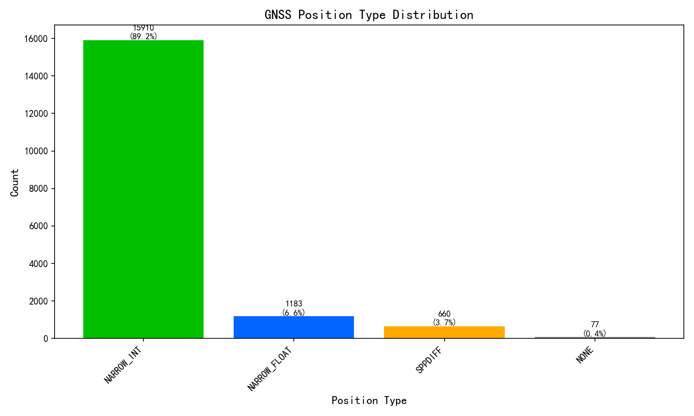
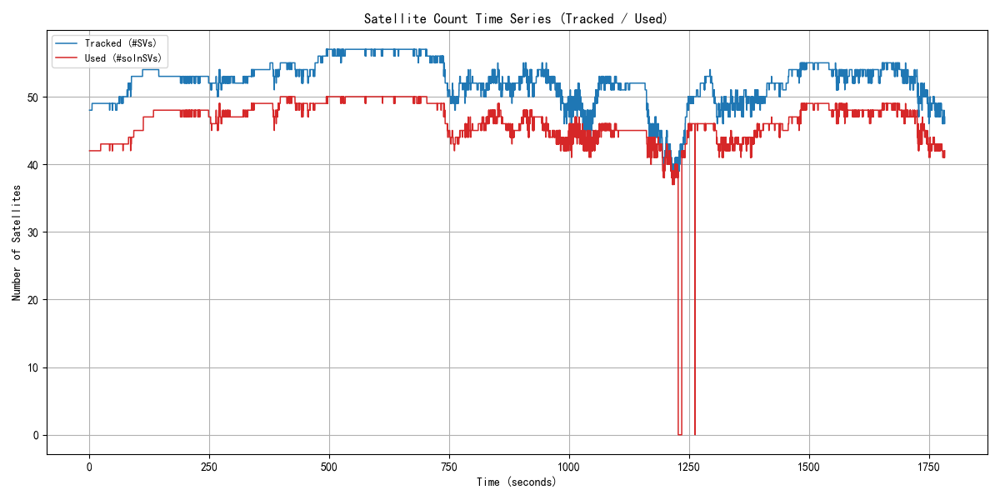
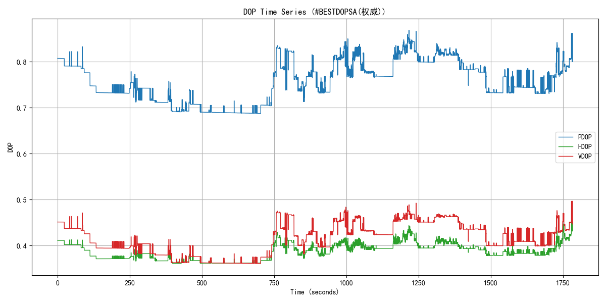
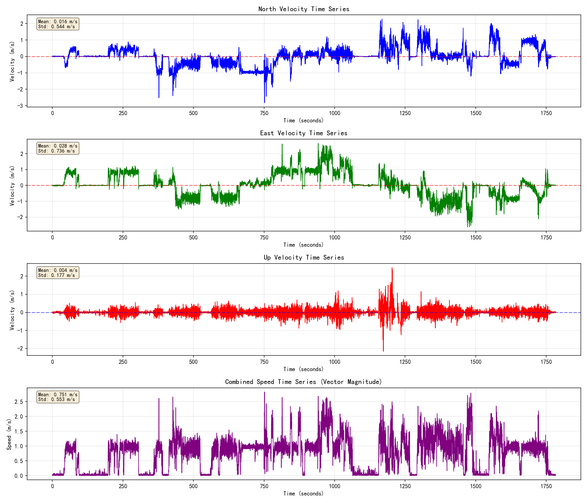
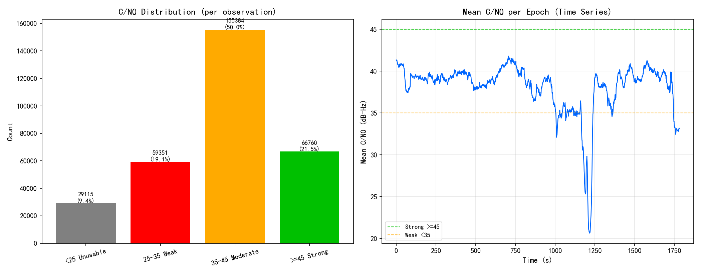
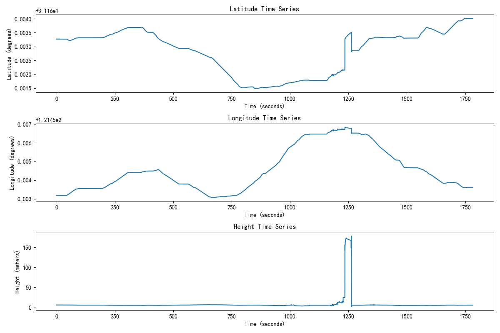
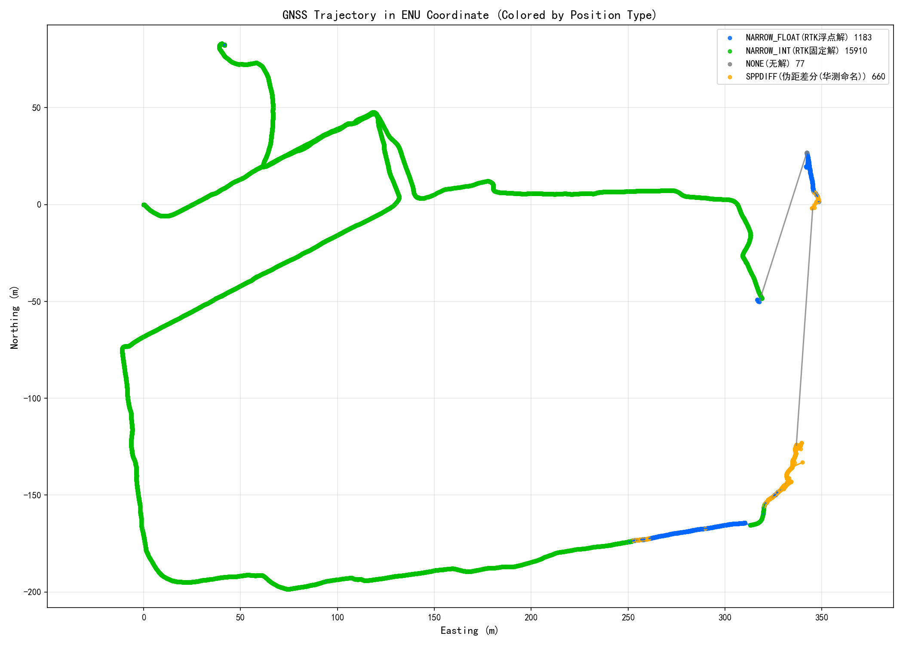
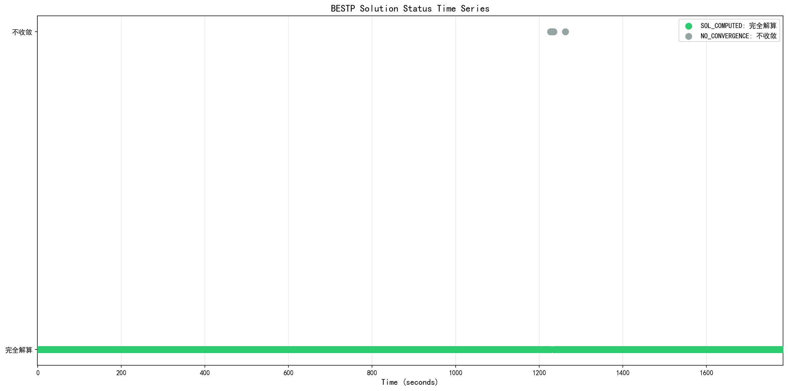

分析输入(COM1/ASCII): 0916星扬上午.log | 生成时间: 2026-09-17 19:24:47 | 分析工具: 华测 HUACE Kinematic Analyzer
| 报文类型 | 数量 | 占比 |
|---|---|---|
| #BESTPA | 17830 | 3.3% |
| $GNGGA | 17830 | 3.3% |
| #BESTVA | 17830 | 3.3% |
| #RTKPA | 17830 | 3.3% |
| #RTKVA | 17830 | 3.3% |
| #ENVSTATUSA | 17830 | 3.3% |
| $GPGSV | 60860 | 11.1% |
| $GLGSV | 36887 | 6.7% |
| $GAGSV | 52520 | 9.6% |
| $GBGSV | 78232 | 14.3% |
| $GQGSV | 34528 | 6.3% |
| $GIGSV | 17333 | 3.2% |
| $GNGSA | 106390 | 19.4% |
| $GNGST | 17830 | 3.3% |
| #BESTDOPSA | 17830 | 3.3% |
| #BESTPOSA | 1783 | 0.3% |
| #RANGEA | 1783 | 0.3% |
| #SATVIS2A | 14264 | 2.6% |
| # | 2 | 0.0% |
| #j|B | 1 | 0.0% |
| < | 8 | 0.0% |
| <0X^ | 1 | 0.0% |
| <4H | 1 | 0.0% |
| #O\ | 1 | 0.0% |
| $ | 1 | 0.0% |
| #X | 1 | 0.0% |
| $`=`x`kC1 | 1 | 0.0% |
| $DG | 1 | 0.0% |
| 1 | 0.0% |
数据完整性: 547239 条有效报文 (原始 562881 行, 乱码残片 2910 行, 二进制 14265 行)
| 报文 | 实测头 | 条数 | 设定周期(s) | 实际周期(s) | 实际频率(Hz) | 估算丢帧率 | 状态 | 备注 |
|---|---|---|---|---|---|---|---|---|
| GGA | $GNGGA | 17830 | 0.100 | 0.100 | 10.00 | 0.0% | 正常 | |
| GSV | $GPGSV,$GLGSV,$GAGSV,$GBGSV,$GQGSV,$GIGSV | 280360 | 0.100 | - | - | - | 正常 | 无可用时间戳, 按报文插入规律推断(以实测数据为准) |
| GST | $GNGST | 17830 | 0.100 | 0.100 | 10.00 | 0.0% | 正常 | |
| GSA | $GNGSA | 106390 | 0.100 | - | - | - | 正常 | 无可用时间戳, 按报文插入规律推断(以实测数据为准) |
| BESTDOPSA | #BESTDOPSA | 17830 | 0.100 | 0.100 | 10.00 | 0.0% | 正常 | |
| BESTPA | #BESTPA | 17830 | 0.100 | 0.100 | 10.00 | 0.0% | 正常 | |
| RTKPA | #RTKPA | 17830 | 0.100 | 0.100 | 10.00 | 0.0% | 正常 | |
| RTKVA | #RTKVA | 17830 | 0.100 | 0.100 | 10.00 | 0.0% | 正常 | |
| BESTVA | #BESTVA | 17830 | 0.100 | 0.100 | 10.00 | 0.0% | 正常 | |
| ENVSTATUSA | #ENVSTATUSA | 17830 | 0.100 | 0.100 | 10.00 | 0.0% | 正常 |
注意: 标红/标黄项表示实际报文周期与设定周期可能不符或存在缺失, 请核对设备输出配置。
采样率分析: 10.00 Hz (平均间隔: 0.100 秒)
RTK链路: 基站ID 1793 (核对1783次) ／ 差分龄期 平均1.13s, 最大16.00s

| 解类型 | 数量 | 占比 |
|---|---|---|
| NARROW_INT | 15910 | 89.2% |
| NARROW_FLOAT | 1183 | 6.6% |
| SPPDIFF | 660 | 3.7% |
| NONE | 77 | 0.4% |
GNSS固定解比率: 89.2%

| 指标(口径依据M7手册) | 数值(平均/最小/最大) |
|---|---|
| 跟踪卫星数 #SVs"跟踪到的卫星数"(M7手册 BESTP 字段15/p83) |
平均 52.2 / 最小 38 / 最大 57 |
| 可用卫星数 #solnSVs"参与解算的卫星数"(M7手册 BESTP 字段16/p84) |
平均 46.4 / 最小 37 / 最大 50 |
两层关系: 跟踪 ≥ 可用。跟踪为接收机已锁定跟踪的卫星, ' '可用为实际参与位置解算的卫星。
数据源: PDOP/HDOP=#BESTDOPSA, VDOP=$GNGSA(同频混合) ｜ DOP为接收机本地解算的几何精度因子(非卫星下发); 多星座时按NMEA共识取"组合"DOP(参与解算的全部卫星几何), 星座越多DOP越小。
#BESTDOPSA不含VDOP(表3-36: PDOP/GDOP/HDOP/TDOP/HTDOP); VDOP取自$GNGSA(表3-3第7字段=垂直精度因子)。两报文同为10Hz同频, 且PDOP/HDOP数值同源(GSA为1位小数舍入版), 故按字段混合使用。

| 指标 | 数值 | 评估 |
|---|---|---|
| 平均PDOP | 0.76 | - |
| 最小PDOP | 0.69 | |
| 最大PDOP | 0.87 | |
| 平均HDOP | 0.39 | 优秀 |
| 最小HDOP | 0.36 | |
| 最大HDOP | 0.45 | |
| 平均VDOP | 0.65 | - |
| 最小VDOP | 0.60 | |
| 最大VDOP | 0.80 | |
| 平均GDOP | 0.86 | - |
| 最小GDOP | 0.78 | |
| 最大GDOP | 1.00 | |
| 平均TDOP | 0.42 | - |
| 最小TDOP | 0.36 | |
| 最大TDOP | 0.50 | |
| 平均HTDOP | 0.80 | - |
| 最小HTDOP | 0.72 | |
| 最大HTDOP | 0.95 |

| 指标 | 数值 | 单位 |
|---|---|---|
| 平均速度 | 0.75 | m/s |
| 最大速度 | 2.83 | m/s |

| 指标 | 数值 | 说明 |
|---|---|---|
| 数据来源 | RANGEA | 原始观测值(伪距/载波/多普勒/载噪比), 华测独有采集, 逐卫星逐频点 |
| 统计历元数 | 1783 | 参与统计的观测历元 |
| 观测值总数 | 310610 | 全部卫星/频点的C/N0样本数 |
| 平均C/N0 | 38.3 dB-Hz | 越高信号越好 |
| 中位数C/N0 | 40.6 dB-Hz | 抗离群值, 反映典型水平 |
| 范围 | 10 ~ 54 dB-Hz | 最低/最高观测值 |
| 低C/N0(<35)占比 | 28.5% | 占比越高遮挡/多路径越明显 |

位置时间序列显示了接收机在Kinematic环境下的位置变化。从图中可以观察到位置的连续性和稳定性。

GNSS轨迹图使用ENU（East-North-Up）坐标系显示，按数据实际出现的解类型动态着色（本设备GNSS解类型见上分布图；不同产品命名可能有差异，如伪距差分北云称PSRDIFF、华测称SPPDIFF，含义相同）：绿色=RTK固定解(NARROW_INT)，蓝色=浮点解(NARROW_FLOAT)，红色=单点(SINGLE)，橙色=伪距差分(PSRDIFF/SPPDIFF)，紫色=PPP，灰色=无解(NONE)。图例中标注各类型数量及中文名。

该图展示了BESTP报文中解算状态（sol stat）的时间序列变化，帮助分析定位过程中解算状态的稳定性。
| 评估指标 | 状态 | 说明 |
|---|---|---|
| GNSS固定解比率 | warning | 89.2%，基本满足要求 |
| 卫星数(跟踪/参与解算) | pass | 平均跟踪52.2颗，平均参与解算46.4颗，良好 |
| DOP值 | pass | 平均HDOP 0.39，优秀 |
以下为该设备特有的字段/能力评估, 每项附"测什么·怎么算好·怎么算坏"注释及依据。
| 特色指标 | 实测值 | 状态 | 评级 | 注释(判断动态的什么/好坏) | 依据 |
|---|---|---|---|---|---|
| 环境质量分 | 69 分 | 警告 | 华测特色: 综合反映观测环境对定位的影响。>=85优秀, 60~84一般, <60不合格。 | 华测M7手册表3-51 | |
| 平均载噪比SNR | 38 dB-Hz | 通过 | 华测特色: 信号强度, 判断遮挡程度。>=38开阔, 32~37半遮挡, <=31严重遮挡。 | 华测M7手册表3-51 | |
| 卫星可视比率 | 80% | 通过 | 华测特色(移动站): 跟踪卫星数/理论可视卫星数。越高越好, 反映天空遮挡。 | 华测M7手册表3-51(阈值为工程经验) | |
| 电离层活跃 | WEAK(轻微) | 通过 | 华测特色: 电离层扰动会加大RTK固定难度。QUIET/WEAK好, MODERATE及以上需关注。 | 华测M7手册表3-52 |